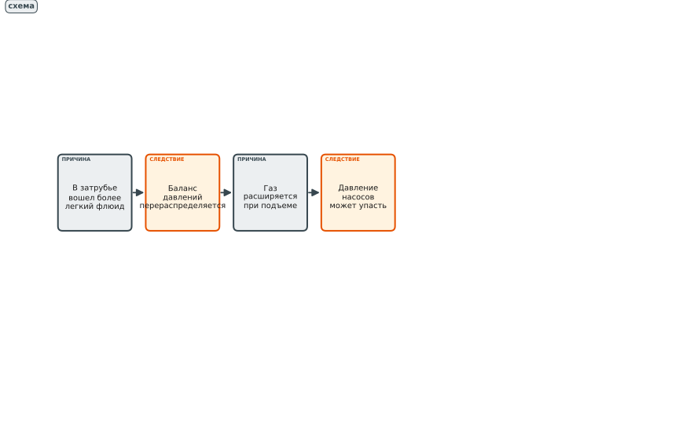
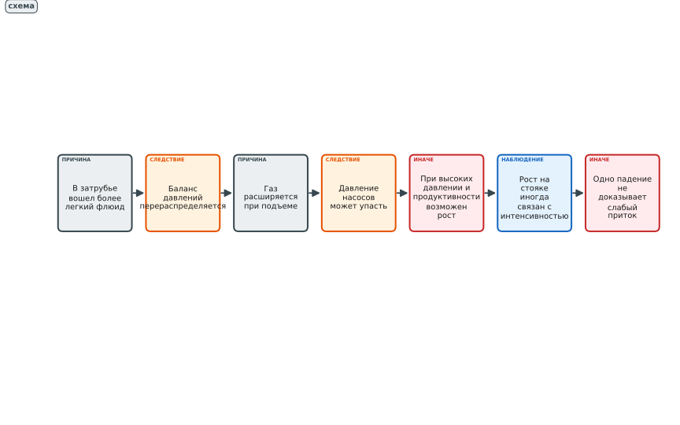

Кольцевое пространство, или затрубье, находится вокруг колонны труб.
Поступление флюида меняет распределение давления, но знак изменения зависит от условий.
Пороговая идея. Объяснить типичное снижение и исключения, не определяя интенсивность по одному показанию. модель
Анимация: как это происходит


1 / 9
Почему при притоке давление не всегда падает?
Допущения: Условная схема; блоки не задают временной масштаб или размеры оборудования.; Условная геометрия разреза, без реальной литологии и без привязки к месторождению..
Как это работает
Механизм
В описанном механизме поступающий флюид менее плотный, чем раствор. Трубы и затрубье — пространство вокруг труб — сообщаются. Когда их заполняют среды разной плотности, давления перераспределяются. стр. 237
«Плотность пластовых флюидов, поступающих во время проявления в скважину, ниже плотности бурового раствора.»
«Но поскольку кольцевое пространство и бурильные трубы представляют систему сообщающихся сосудов, то происходит новое перераспределение давлений за счет снижения давления на буровых насосах.»
Практика
Формула относится к снижению давления в нагнетательной линии в описанном случае. На снижение влияют высота столба флюида и разность плотностей. стр. 237
«В этом случае уменьшение давления в нагнетательной линии»
«высота столба флюида в кольцевом пространстве; $\rho$, $\rho_\phi$ — плотность бурового раствора и пластового флюида соответственно.»
Нюансы
Газ поднимается и расширяется. Высота газового столба растет. Давление насосов при этом снижается. При большом количестве вошедшего газа снижение может быть существенным. стр. 237
«Если в скважину поступил газ, то по мере его подъема высота столба увеличивается в результате расширения и давления на насосах постоянно снижается.»
«Снижение давления в случае поступления большой массы газа может быть существенным.»
Высокие пластовое давление и продуктивность могут дать рост, а не падение давления. Рост может возникать сразу при притоке из-за забойных условий и сопротивления затрубья. стр. 237
«При высоких значениях пластового давления и продуктивности пласта возможно не снижение, а повышение давления в бурильных трубах.»
«Повышение давления в этих случаях возникает непосредственно в момент притока флюида и обусловлено быстрым изменением забойных условий и ростом гидродинамических сопротивлений в затрубном пространстве.»
Отмечена связь раннего роста давления на стояке с интенсивностью выброса. Одно снижение давления не доказывает, что проявление слабое. Снижение может быть вызвано газовой пачкой, вошедшей при подъеме колонны. стр. 237–238
«Отмечается связь между увеличением давления на стояке в начальные моменты выброса и его интенсивностью.»
«Если наблюдается только снижение давления на насосах, то это еще не свидетельствует о слабой интенсивности проявлений.»
«Снижение давления может быть вызвано движением газовой пачки, поступившей во время подъема бурильной колонны в результате свабирования.»
схема
Знак изменения сам по себе не определяет интенсивность.
Класс B · схема · нарисовано кодом · стр. 237–238
Последовательность
Сначала газ входит в ствол скважины. Затем газ поднимается и расширяется. Затем высота газового столба растет. В конце давление насосов снижается. стр. 237
Цифры и условия
Высокие пластовое давление и продуктивность могут дать рост, а не падение давления. стр. 237
Одно снижение давления не доказывает, что проявление слабое. стр. 238
Формулы по книге
$$\Delta p = g l_\phi (\rho - \rho_\phi),$$
Изменение давления из-за менее плотного столба стр. 237
Обозначения
Обозначение
Что это
Единицы
$\Delta p$
снижение давления
—
$g$
ускорение свободного падения
—
$l_\phi$
высота столба флюида
—
$\rho$
плотность раствора
—
$\rho_\phi$
плотность флюида
—
Частая ошибка модель
✗Ошибка: Снижение давления на насосах само доказывает проявление.
✓На самом деле: Это косвенный сигнал; давление на насосах может меняться по другим причинам и при проявлении не обязательно падает.
Что это значит для данных модель
Объяснить типичное снижение и исключения, не определяя интенсивность по одному показанию.
Вход
Текст главы и контекст текущей операции
Выход
Объяснение признака или этапа
Где ломается
Один сигнал не доказывает причину без контекста.
гипотеза Показания сопоставимы только при известном режиме работ.
Где здесь ручной труд специалиста
Входные данные
Текст главы и контекст текущей операции
Ручные шаги
Сверить показания и журнал операции.
Точки суждения
Объяснить типичное снижение и исключения, не определяя интенсивность по одному показанию.
Время
Данные о длительности ручной сверки в главе не приведены.
Типичные ошибки
Один сигнал не доказывает причину без контекста.
Аналогия модель
Проверка контекста события в журнале перед интерпретацией метрики.
Где аналогия перестаёт работать: События в стволе физические, а показания могут запаздывать.
Как это делается сейчас модель
За рабочими решениями обращаются к действующему регламенту и ответственному специалисту; этот узел объясняет учебный пример.
Глубже
Граница ИТ-аналогии модель
События в стволе физические, а показания могут запаздывать.
Новые понятия
Кольцевое пространство (annulus)
Зазор между колонной и стенкой ствола или наружной колонной. модель
Буровой насос (mud pump)
Насос, подающий буровой раствор в скважину. модель
Пластовое давление (formation pressure)
Давление флюида в пласте. модель
Забойная пачка (bottoms-up mud slug)
Порция раствора, возвращающаяся к поверхности из района забоя. модель
Нагнетательная линия (pump discharge line)
Линия, по которой раствор под давлением выходит из насоса. модель
Плотность бурового раствора (mud density)
Масса единицы объема бурового раствора. модель
Проверь себя
Несколько ответов
Верный ответ: Падение по мере расширения газа; Рост при высоком пластовом давлении и продуктивности
Все утверждения шага с дословной цитатой автора и страницей книги (по PDF).
В описанном механизме поступающий флюид менее плотный, чем раствор. наблюдение
«Плотность пластовых флюидов, поступающих во время проявления в скважину, ниже плотности бурового раствора.»
Трубы и кольцевое пространство образуют связанные каналы, давление перераспределяется. наблюдение
«Но поскольку кольцевое пространство и бурильные трубы представляют систему сообщающихся сосудов, то происходит новое перераспределение давлений за счет снижения давления на буровых насосах.»
Формула относится к снижению давления в нагнетательной линии в описанном случае. наблюдение
«В этом случае уменьшение давления в нагнетательной линии»
На снижение влияют высота столба флюида и разность плотностей. наблюдение
«высота столба флюида в кольцевом пространстве; $\rho$, $\rho_\phi$ — плотность бурового раствора и пластового флюида соответственно.»
При подъеме газ расширяется, высота его столба растет, давление насосов падает. наблюдение
«Если в скважину поступил газ, то по мере его подъема высота столба увеличивается в результате расширения и давления на насосах постоянно снижается.»
При большом количестве вошедшего газа снижение может быть существенным. наблюдение
«Снижение давления в случае поступления большой массы газа может быть существенным.»
Высокие пластовое давление и продуктивность могут дать рост, а не падение давления. наблюдение
«При высоких значениях пластового давления и продуктивности пласта возможно не снижение, а повышение давления в бурильных трубах.»
Рост может возникать сразу при притоке из-за забойных условий и сопротивления затрубья. наблюдение
«Повышение давления в этих случаях возникает непосредственно в момент притока флюида и обусловлено быстрым изменением забойных условий и ростом гидродинамических сопротивлений в затрубном пространстве.»
Отмечена связь раннего роста давления на стояке с интенсивностью выброса. наблюдение
«Отмечается связь между увеличением давления на стояке в начальные моменты выброса и его интенсивностью.»
Одно снижение давления не доказывает, что проявление слабое. наблюдение
«Если наблюдается только снижение давления на насосах, то это еще не свидетельствует о слабой интенсивности проявлений.»
Снижение может быть вызвано газовой пачкой, вошедшей при подъеме колонны. наблюдение
«Снижение давления может быть вызвано движением газовой пачки, поступившей во время подъема бурильной колонны в результате свабирования.»
Исходный текст урока
Стр. 237 · 4.1.1. ПРИЗНАКИ ПРОЯВЛЕНИЙ
*Изменения давления на буровых насосах.* Плотность пластовых флюидов, поступающих во время проявления в скважину, ниже плотности бурового раствора. В связи с этим существовавший ранее баланс давлений в кольцевом пространстве и бурильных трубах нарушается. Особенно это характерно для газопроявлений. Но поскольку кольцевое пространство и бурильные трубы представляют систему сообщающихся сосудов, то происходит новое перераспределение давлений за счет снижения давления на буровых насосах.
Стр. 237 · 4.1.1. ПРИЗНАКИ ПРОЯВЛЕНИЙ
В этом случае уменьшение давления в нагнетательной линии
Стр. 237 · 4.1.1. ПРИЗНАКИ ПРОЯВЛЕНИЙ
$$\Delta p = g l_\phi (\rho - \rho_\phi),$$
Стр. 237 · 4.1.1. ПРИЗНАКИ ПРОЯВЛЕНИЙ
где $l_\phi$ — высота столба флюида в кольцевом пространстве; $\rho$, $\rho_\phi$ — плотность бурового раствора и пластового флюида соответственно.
Стр. 237 · 4.1.1. ПРИЗНАКИ ПРОЯВЛЕНИЙ
Если в скважину поступил газ, то по мере его подъема высота столба увеличивается в результате расширения и давления на насосах постоянно снижается. Снижение давления в случае поступления большой массы газа может быть существенным.
Стр. 237 · 4.1.1. ПРИЗНАКИ ПРОЯВЛЕНИЙ
При высоких значениях пластового давления и продуктивности пласта возможно не снижение, а повышение давления в бурильных трубах. Повышение давления в этих случаях возникает непосредственно в момент притока флюида и обусловлено быстрым изменением забойных условий и ростом гидродинамических сопротивлений в затрубном пространстве. Отмечается связь между увеличением давления на стояке в начальные моменты выброса и его интенсивностью.
Стр. 238 · 4.1.1. ПРИЗНАКИ ПРОЯВЛЕНИЙ
Если наблюдается только снижение давления на насосах, то это еще не свидетельствует о слабой интенсивности проявлений. Снижение давления может быть вызвано движением газовой пачки, поступившей во время подъема бурильной колонны в результате свабирования.